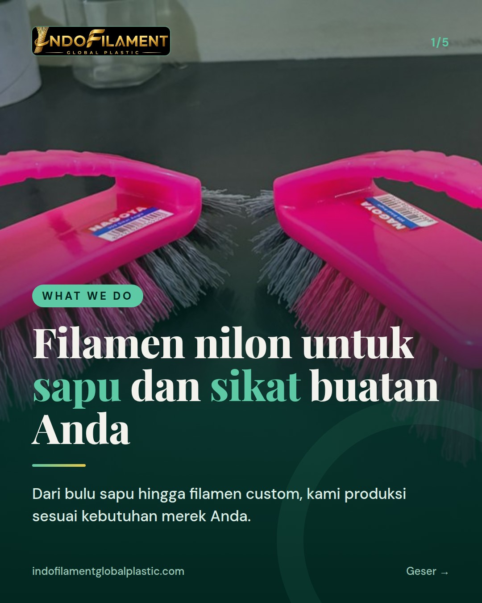
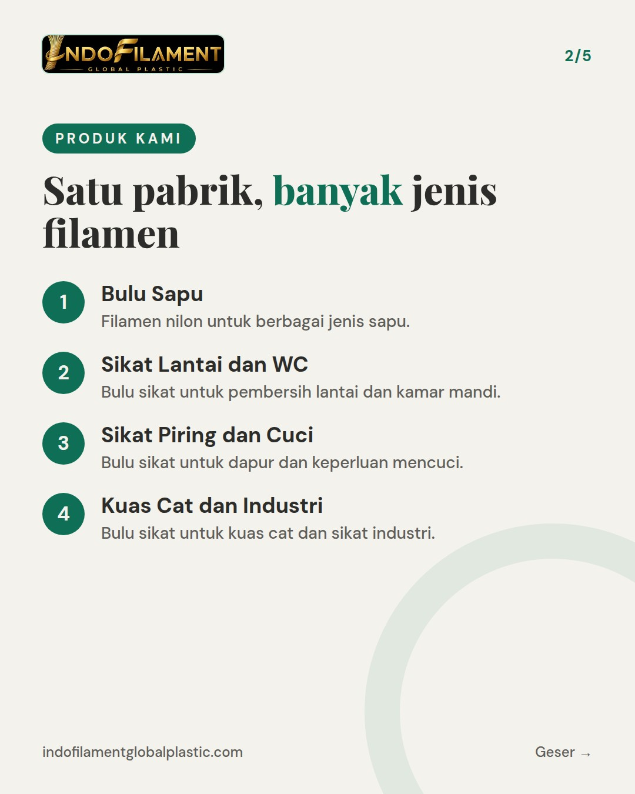
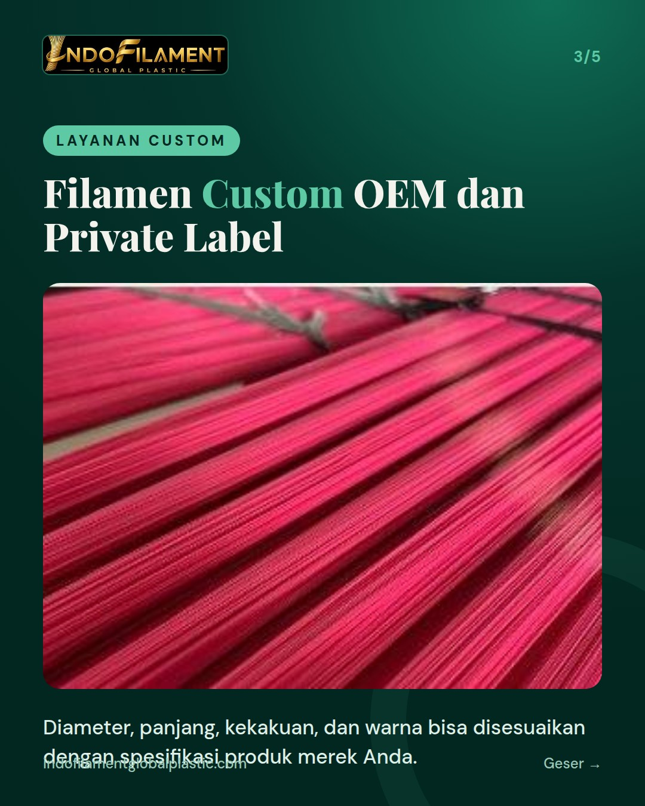
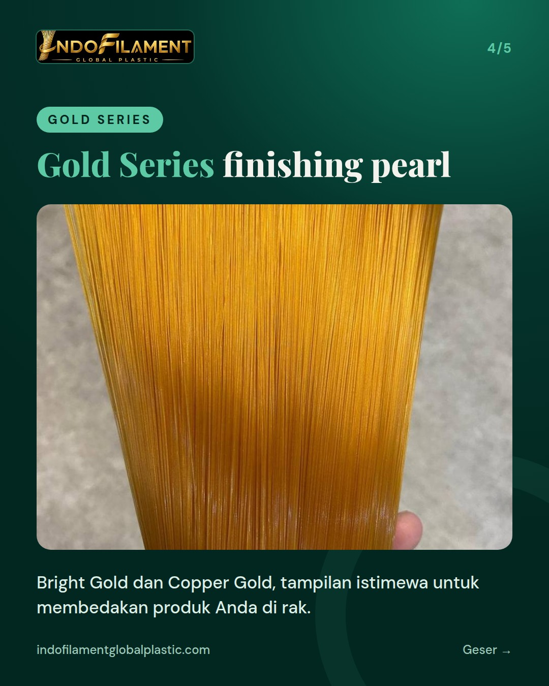
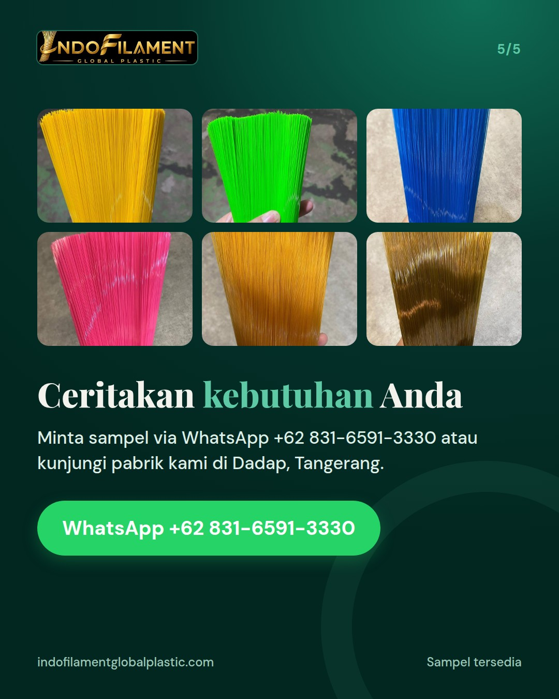

PERKENALAN 3 dari 3 - WHAT WE DO (apa yang kami kerjakan). Kicker cover: What We Do. Isi: produk dan layanan Indofilament: bulu sapu; bulu sikat untuk sikat lantai, WC, piring/dapur, cuci, kuas cat dan sikat industri; filamen custom OEM dan private label; Gold Series; warna, diameter, panjang dan kekakuan bisa disesuaikan; sampel bisa diminta. Caption: bagian ketiga dari seri perkenalan akun, ajak tanya kebutuhan via WhatsApp.





Apa sebenarnya yang kami kerjakan di Indofilament? 🏭 Ini bagian ketiga dari seri perkenalan akun kami. Setelah berkenalan, saatnya melihat apa saja yang kami produksi di Tangerang. Kami membuat filamen nilon untuk bulu sapu dan bulu sikat: sikat lantai, WC, piring/dapur, cuci, kuas cat, hingga sikat industri. Untuk merek yang ingin tampil beda, tersedia filamen custom OEM dan private label, serta Gold Series (Bright Gold dan Copper Gold) dengan finishing pearl. Warna, diameter, panjang, dan kekakuan bisa disesuaikan dengan kebutuhan produk Anda. Bahan bakunya plastik daur ulang, jadi lebih ramah lingkungan. ♻️ Punya kebutuhan tertentu? Ceritakan ke kami. Minta sampel via WhatsApp +62 831-6591-3330 atau DM, dan pabrik kami juga terbuka untuk dikunjungi. For export buyers: Indofilament manufactures nylon filament for brooms and brushes, with custom OEM and private label options. Message us on WhatsApp +62 831-6591-3330 to request samples. #bulusapu #bulusikat #filamen #pabriksapu #madeinindonesia #broomfilament #brushfilament #nylonfilament #privatelabel #OEM #pabrikTangerang #indofilament